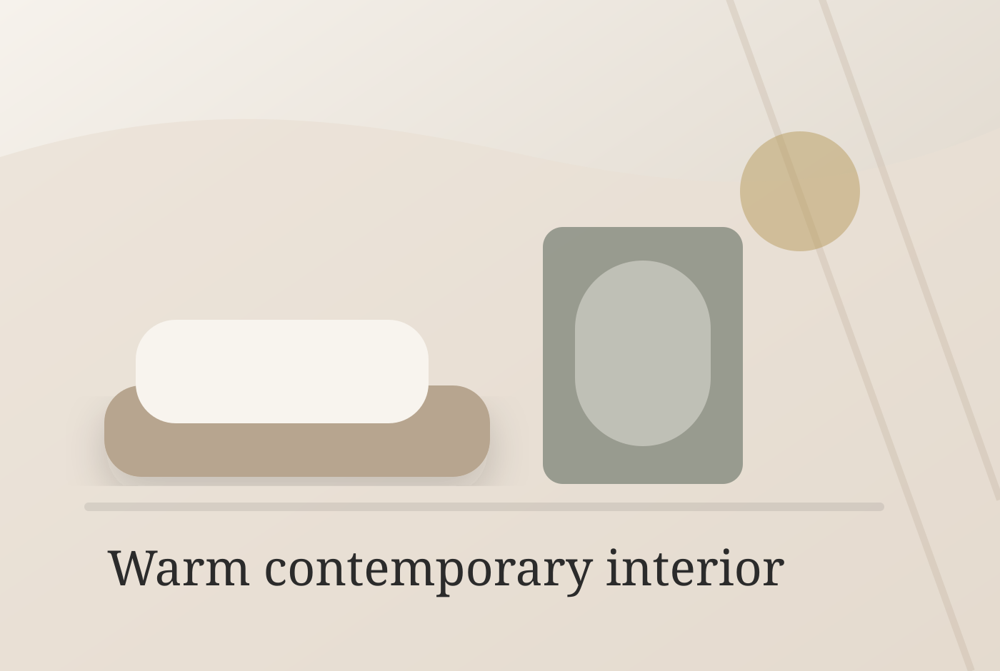
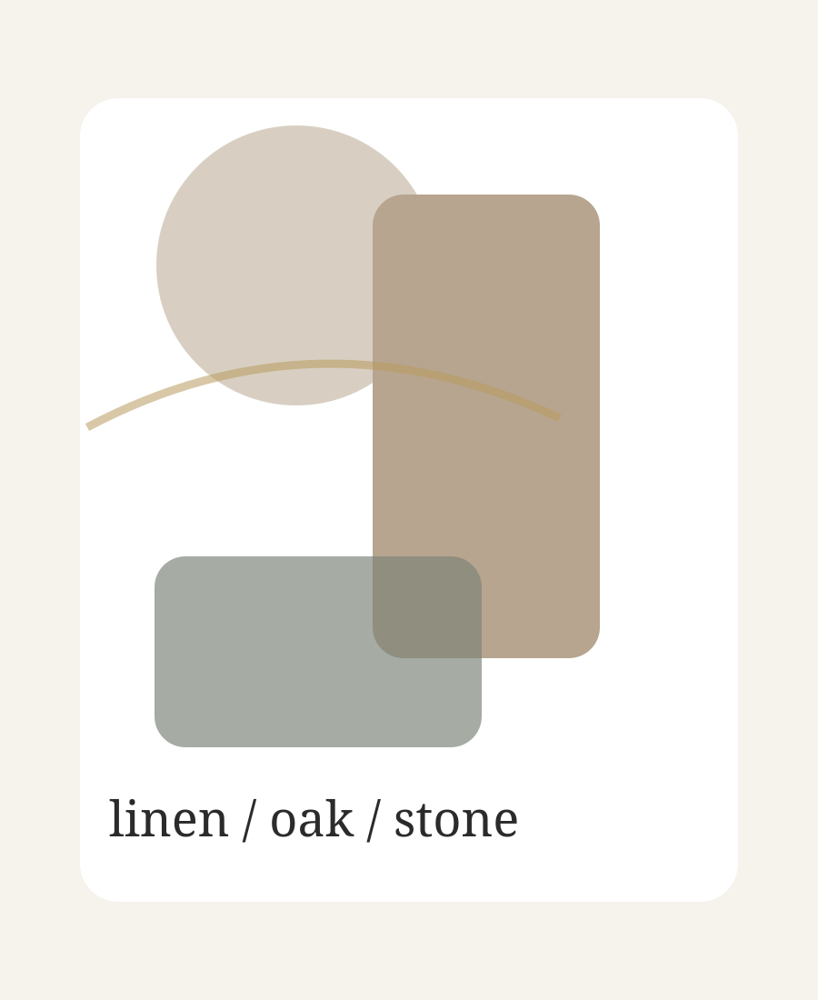
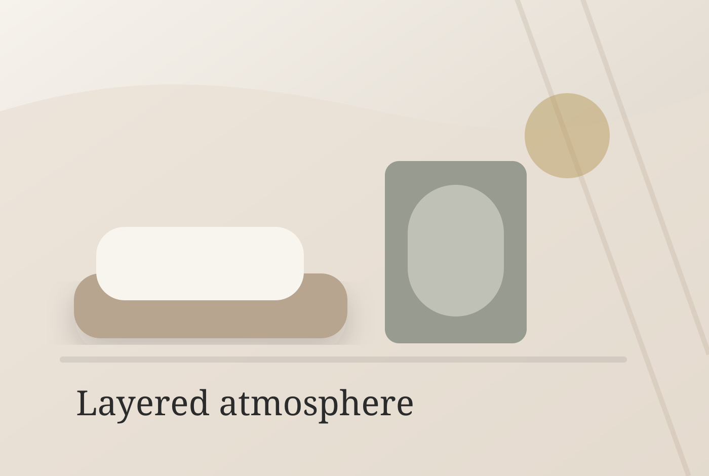
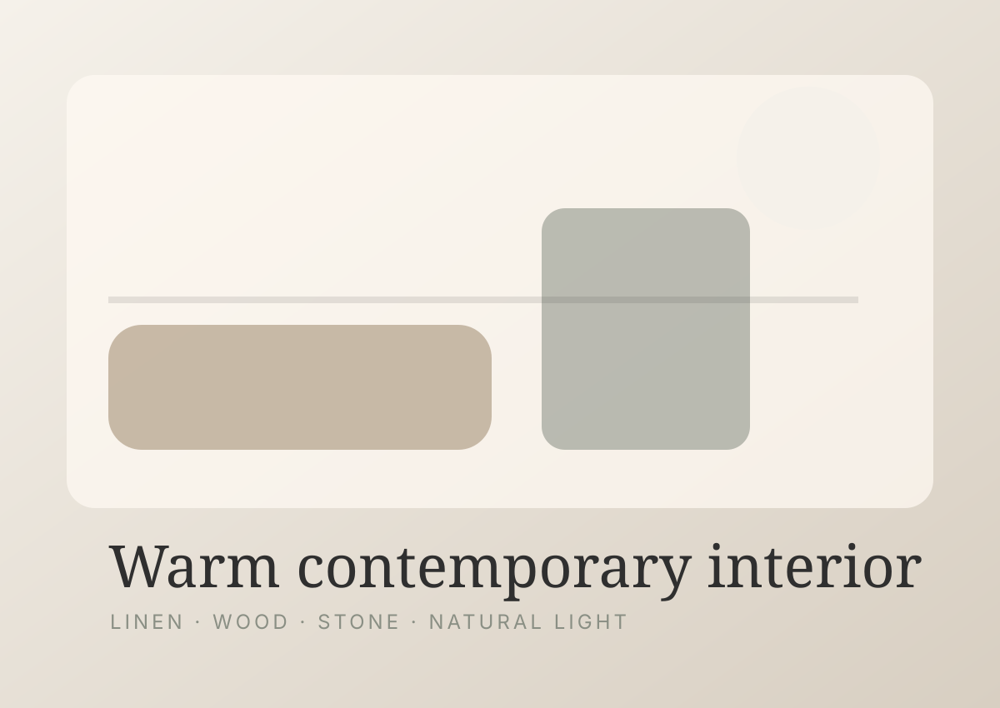
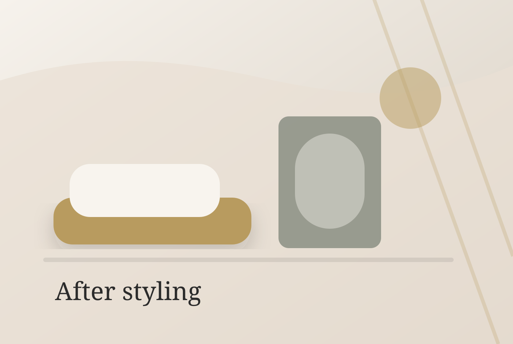
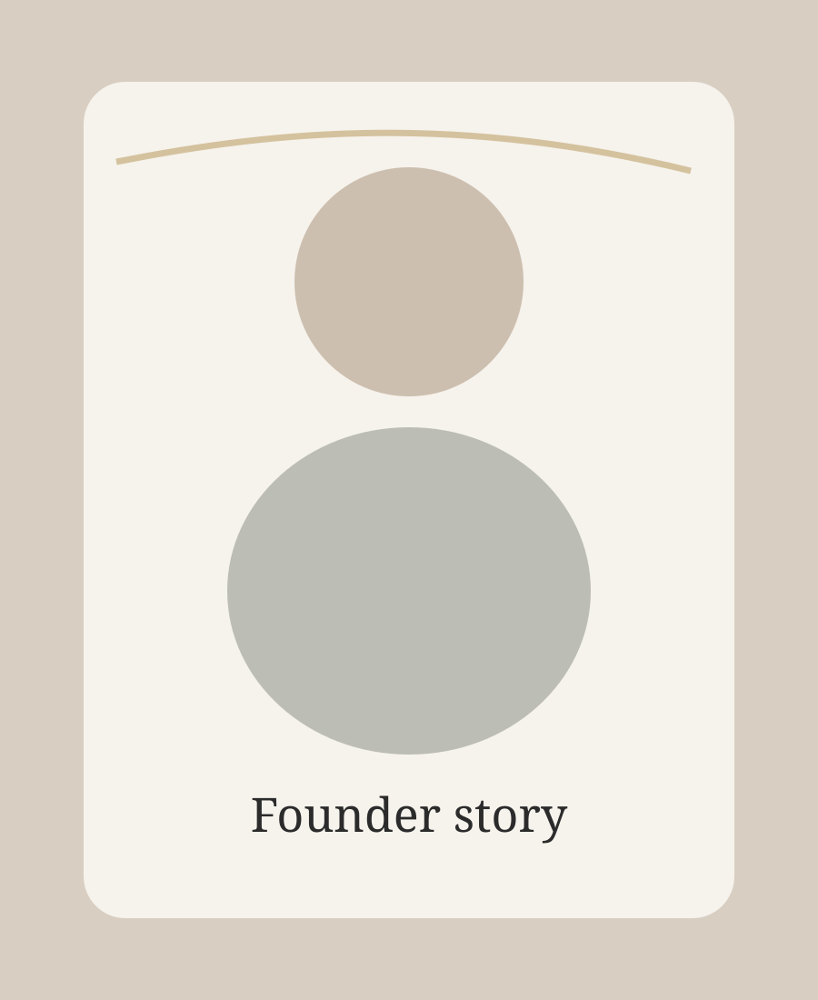

Space Reset Consultation
A focused room review with practical guidance for layout, lighting, visual clutter and atmosphere.

Backyard Studio
Helping overwhelmed rooms feel calm, cohesive, and beautifully lived in through visual editing, lighting, textiles, and thoughtful styling.
What we do
Backyard Studio is a boutique interior styling studio for homeowners who want a calmer home without moving into renovation. We refine layout, light, textile layers and surface details so each room feels intentional, warm and easy to live in.

Atmosphere first
Often the room does not need more. It needs a clearer point of view, softer lighting, stronger furniture placement and fewer competing details.
Services
A focused room review with practical guidance for layout, lighting, visual clutter and atmosphere.
Furniture placement, textile layering and finishing touches for a cohesive living space.
A restorative bedroom edit for softness, bedside details, linen, lighting and balance.
A thoughtful restyle using existing pieces to refresh the room without a full renovation.

“A home can feel refined without feeling untouchable.”
Our approach
Notice the room, routines and pieces that already matter.
Reduce visual noise so the space has room to breathe.
Layer light, textiles, furniture and meaningful details.
Bring back a calmer feeling for everyday living.
Before & after
Placeholder comparisons show the intended rhythm: less clutter, better balance, warmer light and a more settled feeling.



About
Backyard Studio was created for homeowners who want their spaces to feel more considered, but still personal. The work is quiet and practical: looking carefully, editing gently and styling with warmth so your home feels like somewhere you can exhale.